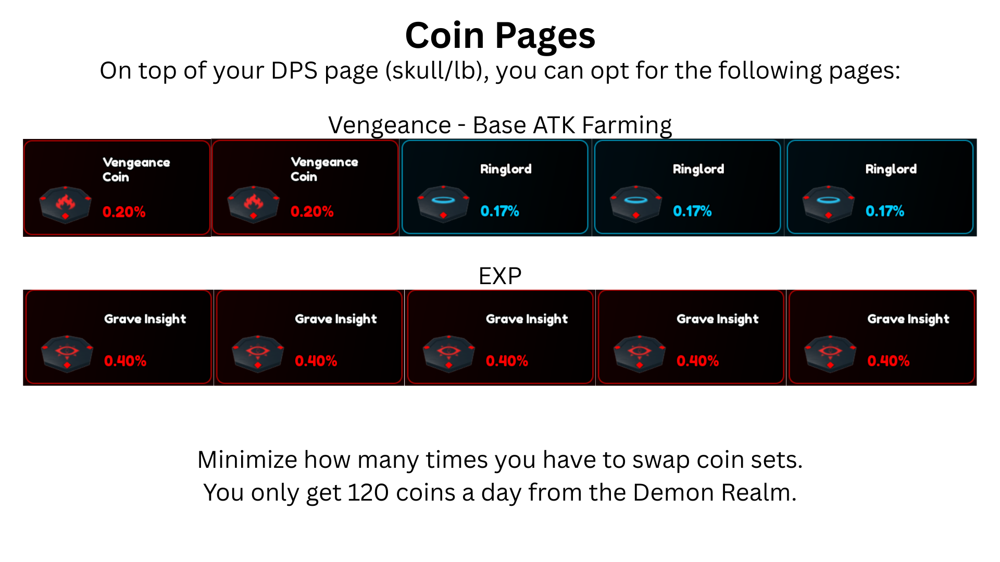
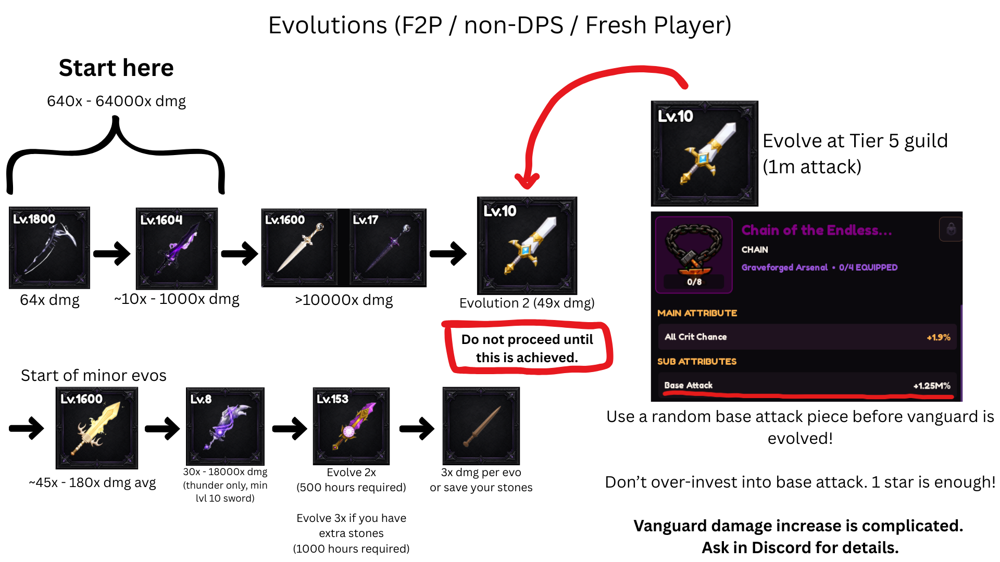
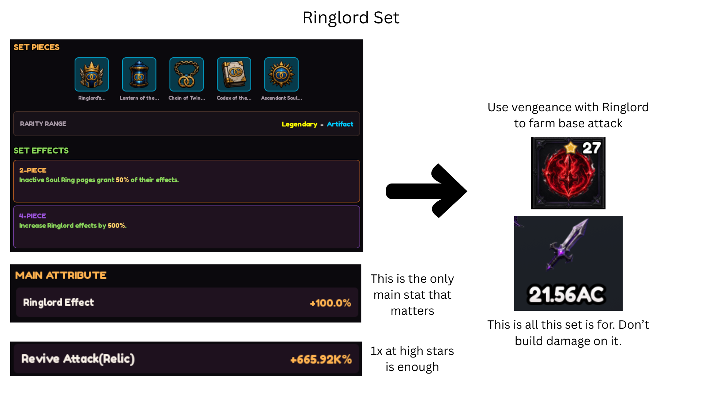
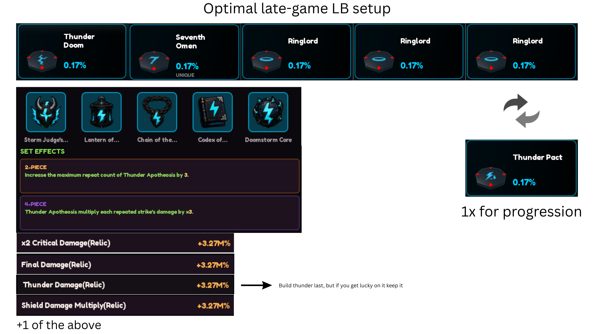
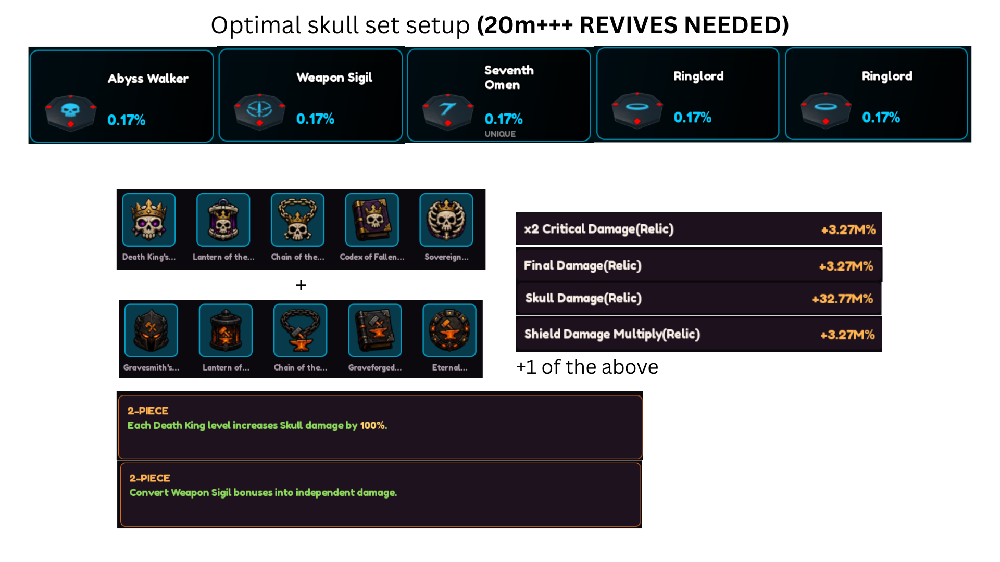
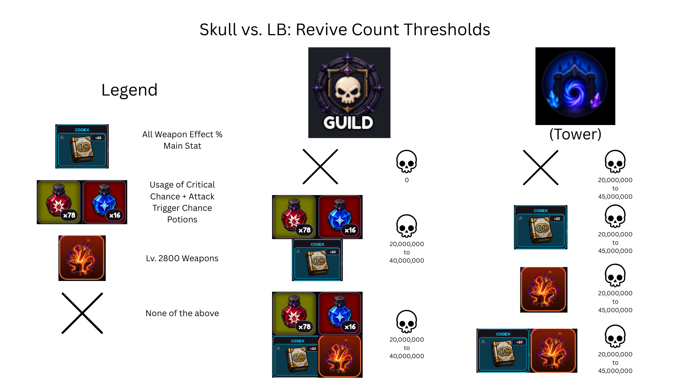
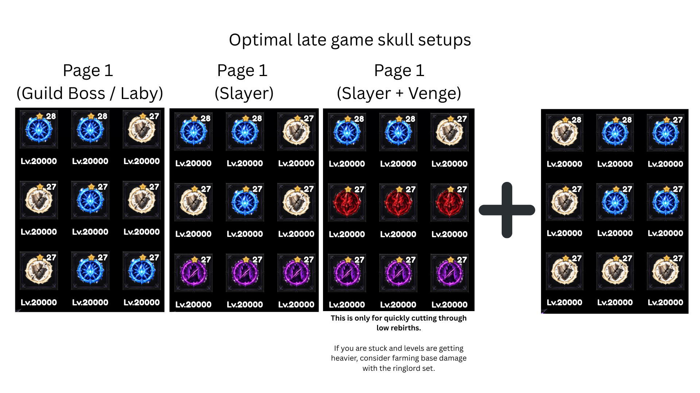
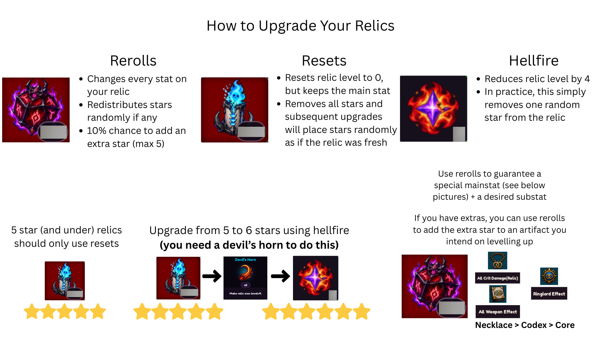
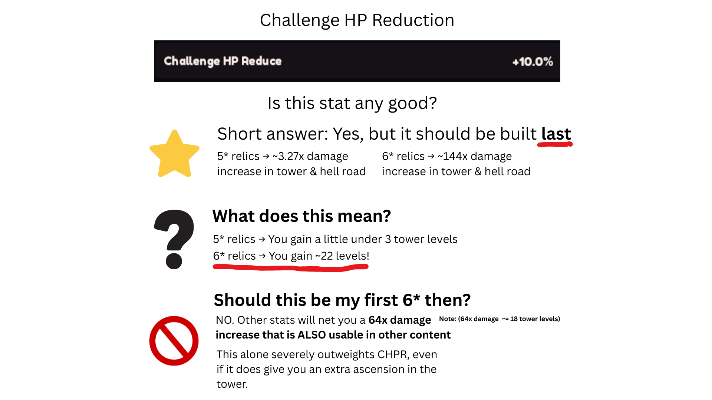

Extra Skull CoinsNEW
Skull coins to get on your extra page.
- 🔓 EXP is recommended.
- Vengeance page is a ~4x damage increase if you opt for it instead.
- "Death Goad" does NOT double the revives you get per death.

Path 1 = DPS · Path 3 = Souls · Path 4 = LB
Soul Tree Guide Beginners
Which Soul Tree nodes to unlock and upgrade first, and what to skip until later.
- 🔓 Unlock: 1-1 → 1-2 → 2-1 → 2-2 → 1-3 → 1-4 → 4-2-2-2 → Path 3 → 2-3 → 2-2-1 → 2-2-2
- 🚫 Don't Get: Skip 2-4 until both Ring Pages are around 20k.
- 📈 Upgrade: 2-2 → Path 1 → 4-2-2-2 → Soul Generator → 3-3 → 2-3
- ⚔️ 1-2-1: Get it once your Swords are maxed.
Path 1 = DPS · Path 3 = Souls · Path 4 = LB
Evolutions F2P / non-DPS / Fresh Player
The recommended weapon evolution path if you're free-to-play or not focused on pure DPS. Don't skip ahead — each stage lists the damage multiplier and the checkpoint you need before evolving further.
- Main line: Scythe → Shield Breaker → Sword of Light/Dark. Evolve Vanguard any time you reach Guild Tier 5.
- Do not proceed past Vanguard Evolution 2 until it's fully achieved.
- Use a random Base Attack piece before Vanguard is evolved — don't over-invest; 1 star is enough.

Ringlord Set
A base attack farming set, not a damage set — don't build damage stats on it.
- 2-piece: Inactive Soul Ring pages grant 50% of their effects.
- 4-piece: Increases Ringlord effects by 500%.
- Ringlord Effect is the only main stat that matters; 1x Revive Attack relic at high stars is enough.
- Use Vengeance with Ringlord to farm base attack.

Optimal Late-Game LB Setup
Thunder/Lightning-build gear: Thunder Doom (LB), Seventh Omen (M7), and 3x Ringlord (Halo), paired with the Doomstorm 4-piece set.
- 2-piece: +3 to the maximum repeat count of Thunder Apotheosis.
- 4-piece: Thunder Apotheosis multiplies each repeated strike's damage by x3.
- Relic priority: x2 Critical Damage, Final Damage, Thunder Damage, Shield Damage Multiply, +1 of the above.
- Build Thunder Damage last — but keep it if you get a lucky roll.
- You can keep 1x Thunder Pact for early ascensions, but replace it with a Halo after.
- If you happen to get a Halo first, just keep it.

Optimal Skull Set Setup 20M+ revives needed
Abyss Walker (Skull Coin), Weapon Sigil, Seventh Omen (M7), and 2x Ringlord (Halo), combined with the Death King 2-piece + Gravesmith 2-piece set.
- 2-piece: Each Death King level increases Skull damage by 100%.
- 2-piece: Converts Weapon Sigil bonuses into independent damage.
- Relic priority: x2 Critical Damage, Final Damage, Skull Damage, Shield Damage Multiply, +1 of the above.

Skull vs. LB: Revive Count Thresholds
Which build to run depends on your revive count and whether you're farming Guild or Tower content.
- Guild: No potions/codex → 0 revives. Crit/Insight potions + AWE/Lv. 2800 weapons → 20M–40M.
- Tower: 20M–45M revives across every stage.
- Why 20M–45M: These are the two thresholds where the crossover can happen, not a range you're stuck in. 20M is the earliest: it's when Skull overtakes an unbuffed LB with no potions — LB never wins even at 19M revives without them. 45M is the latest: after 45M revives, Skull out-damages LB in every situation, even a fully-potted LB running every weapon effect.

Optimal Late-Game Soul Ring Setups
Page 1 loadouts differ by target content; Page 2 is a shared general-purpose page.
- Slayer + Venge: For quickly cutting through low rebirths only.
- If progress stalls and levels get heavy, farm base damage with the Ringlord set instead.
Optimal Late-Game Soul Ring Setups
Page 1 loadouts differ by target content; Page 2 is a shared general-purpose page.
This is for the Skull Coin build, which is a late game build.
- Slayer + Venge: For quickly cutting through low rebirths only.
- If progress stalls and levels get heavy, farm base damage with the Ringlord set instead.

Best Relic Stats
Which main stat to chase per relic slot, and sub stat priority for each build.
- Main stat — Core: Ringlord.
- Main stat — Chain: All Critical Damage.
- Main stat — Codex: All Weapon.
- Main stat — Mask & Chain: Attack Speed / Shadow / Critical Chance — doesn't matter which.
- Sub stats — LB: Final Damage > x2 Critical Damage > Shield Damage > Thunder Damage. 5th piece can dupe Final Damage or x2 Critical Damage, or use Challenge HP for tower climbing.
- Sub stats — Skull: Final Damage > x2 Critical Damage > Shield Damage > Skull Damage. 5th piece can dupe Final Damage or x2 Critical Damage, or use Challenge HP for tower climbing.
How to Upgrade Your Relics
Three ways to modify a relic: Rerolls, Resets, and Hellfire.
- Rerolls: change every stat, redistribute stars randomly, 10% chance to add an extra star (max 5).
- Resets: reset relic level to 0 but keep the main stat; stars are removed and re-rolled from scratch.
- Hellfire: reduces relic level by 4, which in practice removes one latest star (needs a Devil's Horn to push 5★ → 6★).
- 5★ and under relics should only use Resets.
- Priority for special-type relics: Necklace > Codex > Core.

Challenge HP Reduction — Is It Any Good?
Short answer: yes, but build it last.
- 5★ relics → ~3.27x damage increase in Tower & Hell Road (≈ under 3 tower levels).
- 6★ relics → ~144x damage increase in Tower & Hell Road (≈ 22 tower levels).
- It should not be your first 6★ stat — other stats net a 64x damage increase (≈18 tower levels) that's also usable outside the tower, which outweighs Challenge HP Reduction even accounting for the extra ascension it grants.

Tools
Small utilities for the community.
Roblox Username Lookup
Enter a Roblox user ID to fetch their current username.
Relic Drop Odds by Level
Pick your relic level to see the drop chance of each rarity per kill, per run, and per 20 runs.
| Rarity | Per Kill | Per Run | Per 20 Runs |
|---|
Relic Stat Roll Odds
Pick a relic slot, rarity, and Main Stat, then up to 4 desired Sub-Stats. Slots the rarity can never roll are greyed out. The one slot beyond the rarity's more-common sub-stat count is a 3-way choice: "No Extra Sub-Stat" (forces the lower, more common count), "Any" (forces the rarer higher count, but that slot can be anything), or a specific Sub-Stat (forces the higher count with that stat required).
Main Stat
Sub-Stats
Sub-Stat slot availability and odds come from the rarity's "Initial Sub-Stat Count" chances. Sub-Stat Chances are assumed identical across all 5 slots (confirmed for Lantern and Codex; not independently verified for Mask/Chain/Core).
Shadow Sword Drop Odds
Chance of a Shadow Sword dropping per Shadow Realm floor and across a full 6-floor run.
Shadow Realm Upgrades
Run Buffs
| Floor | Chance / Enemy | Enemies | Floor Chance |
|---|
Pillar is locked to ×2, matching Death Coin's confirmed doubling and this game's "+200%" convention. The source spreadsheet's own formula actually computed ×3 for Pillar — that reading is unconfirmed, so we're going with the safer, tooltip-consistent ×2 instead. Let us know if you find in-game proof either way.